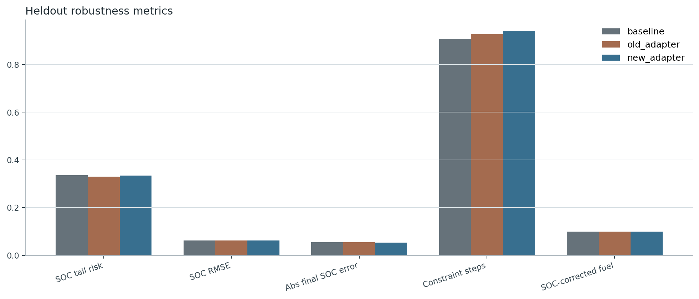
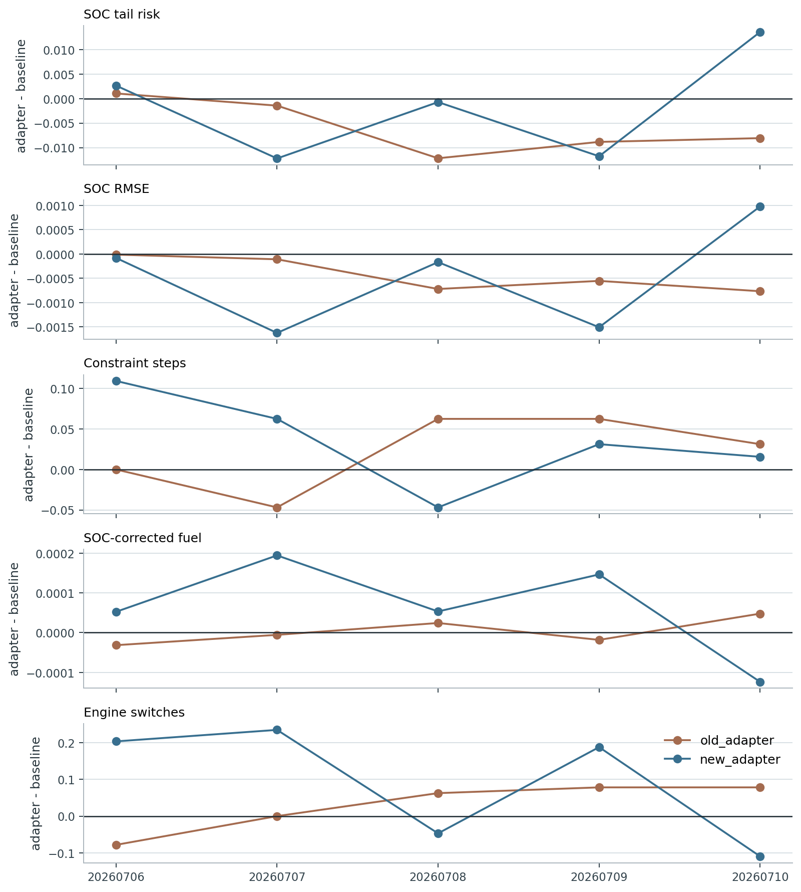
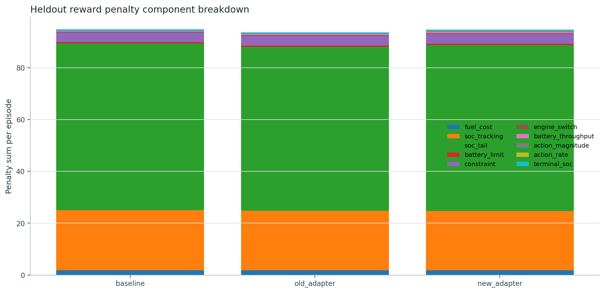
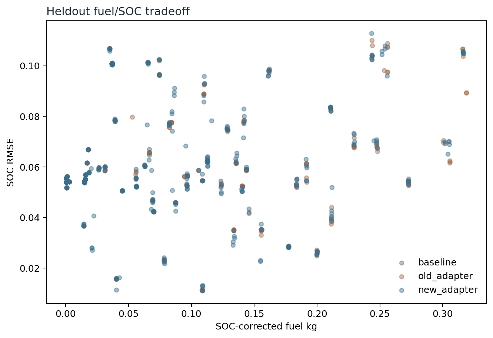
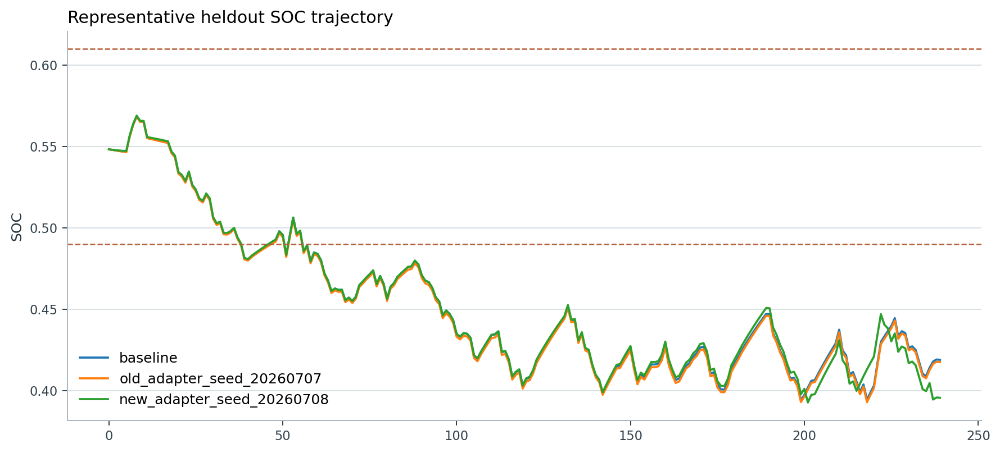
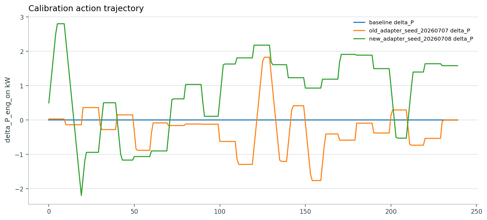
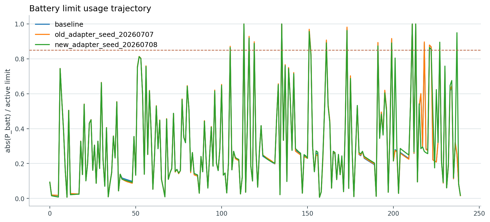

Robustness Reward v2 재학습 결과 보고서
요약
새 reward는 `SOC_corrected_fuel`을 reward에서 제외하고, normalized fuel/SOC tail/battery-limit proximity/constraint/action smoothness penalty로 구성했다. Meta-RL action은 계속 `delta_P_eng_on`, `delta_SOC_ref`만 사용한다.
Heldout 5-seed 평균에서 새 reward policy는 baseline 대비 SOC tail risk -0.00169, SOC_RMSE -0.00048, 최종 SOC 오차 -0.00137만큼 낮췄다. 다만 constraint step은 0.0344, SOC-corrected fuel은 0.00006, engine switch는 0.0938만큼 증가했다.
기존 reward policy도 같은 robustness-v2 평가에서 SOC tail risk -0.00589, SOC_RMSE -0.00043 개선을 보였으므로, 새 reward가 모든 평균 metric을 압도한다고 주장하면 과하다. 새 reward의 장점은 claim에 맞는 위험항을 reward/로그/선택 기준으로 명시하고, guardrail을 통과하는 seed를 선별할 수 있게 만든 데 있다.
최종 논문 claim은 `production-like EMS의 task-aware calibration adapter가 unseen driving condition에서 SOC regulation과 constraint robustness를 개선한다`로 두되, 현재 결과만으로는 `constraint robustness가 모든 seed 평균에서 일관되게 개선된다`고 쓰면 강하다. 더 안전한 표현은 `SOC regulation은 평균적으로 개선되며, constraint/fuel/switch는 lexicographic guardrail selection으로 통제한다`이다.
Reward 변경 이유
기존 Python training reward는 fuel, SOC error, engine switching, constraint, battery power 항을 한 reward 안에 섞었지만, 물리 단위가 서로 달라 weight 의미가 불명확했다. 또한 평균 SOC tracking은 볼 수 있어도 warning/critical SOC 영역에 들어가는 tail risk, battery power limit 근접도, action smoothness가 논문 claim과 직접 연결되어 저장되지 않았다.
Robustness Reward v2는 평균 성능보다 production-like EMS에서 위험하게 보이는 상황을 드러내는 데 초점을 둔다. 정상 SOC band 안에서는 SOC penalty를 약하게 두고, warning/critical band 밖으로 밀려날수록 normalized risk가 커지게 했다. 배터리 charge/discharge limit도 순간 limit 사용률이 0.85를 넘으면 proximity risk가 증가하고, 1.0 이상은 constraint violation과 연결되도록 기록한다.
Simulink의 `controllers/reward_function.m`은 monitoring용 기존 reward로 유지했고, 학습용 reward는 `python/hev_native_env.py`에서 `reward_version`으로 선택되게 했다. `.slx/.sldd/.mat` 파일은 수정하지 않았다.
Reward 정의
새 reward는 각 step에서 아래 penalty 합의 음수로 계산한다.
`r_t = -(w_f C_f + w_soc E_soc + w_tail R_soc_tail + w_lim R_batt_limit + w_const I_constraint + w_sw I_switch + w_thr C_batt_throughput + w_mag |a_t| + w_rate |a_t-a_{t-1}| + w_term R_terminal)`
정규화 기준은 fuel norm 2e-3 kg/s, battery power norm 50 kW, SOC normal/warning/critical band 0.03/0.06/0.10, battery limit warning/critical usage 0.85/1.00이다. 초기 weight는 fuel 0.04, weak SOC tracking 0.04, terminal SOC 1.50, engine switch 0.05, constraint 4.0, battery throughput 0.02, action magnitude 0.003, action rate 0.006이다.
`SOC_corrected_fuel_kg`은 reward 항에 넣지 않았다. 이 값은 charge-sustaining fairness를 확인하는 evaluation/guardrail metric으로만 사용한다. reward에 직접 넣으면 fuel 절감과 SOC 유지의 tradeoff가 숨겨지고, 논문 결과 해석에서 `실제로 SOC를 써서 fuel을 줄인 것인지`가 불명확해질 수 있기 때문이다.
평가 설계
비교 대상은 `map_rule_zero_offset` baseline, 기존 reward로 학습된 5개 seed adapter, 새 robustness reward로 학습된 5개 seed adapter다. 세 controller 그룹은 같은 fixed manifest에서 deterministic rollout으로 평가했다. 각 split은 64개 profile/task를 사용했고, `meta_validation`과 `heldout_evaluation`을 분리해서 저장했다.
평가 metric은 episode reward, SOC_RMSE, 최종 SOC 오차, SOC tail risk/violation, constraint violation steps, battery limit proximity risk, SOC_corrected_fuel_kg, engine switch count, battery throughput, action magnitude/rate, reward component breakdown을 포함한다.
Heldout 평균 비교
| controller | reward | SOC tail risk | SOC RMSE | abs final SOC error | constraint steps | SOC-corrected fuel | engine switches |
|---|---|---|---|---|---|---|---|
| baseline | -94.7484 | 0.33538 | 0.06180 | 0.05466 | 0.906 | 0.09941 | 7.375 |
| old_adapter | -93.6501 | 0.32949 | 0.06137 | 0.05426 | 0.928 | 0.09941 | 7.403 |
| new_adapter | -94.6648 | 0.33369 | 0.06132 | 0.05329 | 0.941 | 0.09947 | 7.469 |
Meta-validation 평균 변화
| controller | reward Δ | SOC tail risk Δ | SOC RMSE Δ | abs final SOC error Δ | constraint Δ | fuel Δ | engine switch Δ |
|---|---|---|---|---|---|---|---|
| old_adapter | 0.5339 | -0.00211 | -0.00025 | -0.00084 | -0.0344 | 0.00014 | 0.1250 |
| new_adapter | 0.6014 | -0.00231 | -0.00066 | -0.00180 | -0.0281 | 0.00034 | 0.3000 |
Heldout 평균 변화
| controller | reward Δ | SOC tail risk Δ | SOC RMSE Δ | abs final SOC error Δ | constraint Δ | fuel Δ | engine switch Δ |
|---|---|---|---|---|---|---|---|
| old_adapter | 1.0983 | -0.00589 | -0.00043 | -0.00040 | 0.0219 | 0.00000 | 0.0281 |
| new_adapter | 0.0836 | -0.00169 | -0.00048 | -0.00137 | 0.0344 | 0.00006 | 0.0938 |
Figure 해석 가이드
Metric bar plot은 baseline, 기존 reward adapter, 새 reward adapter의 heldout 평균을 직접 비교한다. 이 그림에서 새 reward는 SOC_RMSE와 final SOC error를 낮추지만, constraint와 switch는 평균 기준으로 약간 올라간다.
Seed delta plot은 seed별 편차를 보여준다. 새 reward seed 중 `20260707`은 SOC tail risk와 reward는 크게 좋아지지만 constraint guardrail을 넘기 때문에 최종 선택에서 제외된다. 선택된 `20260708`은 개선폭은 작지만 constraint, SOC tail, fuel, switch guardrail을 모두 통과한다.
Reward component breakdown은 penalty가 어디서 발생하는지 확인하는 그림이다. Robustness reward가 단순 total reward만 높이는 방향이 아니라 SOC tail, battery limit, action smoothness 같은 claim 관련 위험항을 분리해 추적한다는 점이 중요하다.
Representative SOC/action/battery limit plot은 동일 heldout episode에서 controller가 SOC와 action을 어떻게 다르게 움직이는지 보여준다. 이 그림은 평균 표만으로는 보이지 않는 controller behavior를 설명하기 위한 보조 자료다.
Lexicographic model selection
- 선택된 기존 reward seed: `20260707`
- 선택된 새 reward seed: `20260708`
- 선택 기준: heldout constraint <= baseline, SOC tail risk <= baseline, SOC-corrected fuel 악화 2% 이내, engine switch 증가 10% 이내, 이후 SOC_RMSE/최종 SOC/reward 순.
- 기존 reward 선택 seed `20260707`: SOC tail risk Δ -0.00144, SOC RMSE Δ -0.00011, final SOC error Δ -0.00000, constraint Δ -0.0469, SOC-corrected fuel Δ -0.00001, engine switch Δ 0.0000.
- 새 reward 선택 seed `20260708`: SOC tail risk Δ -0.00072, SOC RMSE Δ -0.00017, final SOC error Δ -0.00010, constraint Δ -0.0469, SOC-corrected fuel Δ 0.00005, engine switch Δ -0.0469.
해석
새 reward의 5-seed 평균은 SOC regulation 쪽으로 이동했지만, constraint robustness는 seed 선택 없이 평균만 보면 아직 결정적으로 좋아졌다고 보기 어렵다. 따라서 논문에서는 `production-like EMS의 task-aware calibration adapter가 unseen driving condition에서 SOC regulation을 개선하고, normalized robustness reward와 lexicographic guardrail selection으로 constraint/fuel/switch 위험을 통제한다` 정도가 현재 결과에 맞다.
새 reward seed 중에는 reward와 SOC tail 개선이 큰 대신 constraint guardrail을 넘는 경우가 있다. 그래서 단순 평균 최고 reward checkpoint가 아니라, constraint -> SOC tail -> fuel -> switch -> SOC error 순의 lexicographic selection을 반드시 model selection 절차로 문서화해야 한다.
SOC_corrected_fuel은 reward에 포함하지 않았고, 표에서는 charge-sustaining fairness guardrail로만 해석한다.
한계와 다음 실험
현재 결과는 reward 설계가 claim metric을 더 잘 드러내도록 만든 것은 확인하지만, 새 reward가 기존 reward보다 모든 heldout 평균 metric에서 우월하다는 결론은 아니다. 특히 constraint violation은 평균 기준으로 아주 작게 증가했기 때문에, 논문 본문에서는 선택 seed와 guardrail 절차를 함께 제시해야 한다.
다음 실험으로는 reward ablation, stress-only heldout split, 새 reward 정책을 포함한 bounded-offset DP/oracle 재평가, checkpoint별 lexicographic frontier plot, weather/road-friction profile stress test를 추천한다. 이 중 ablation과 stress-only split은 claim의 설득력을 가장 직접적으로 높인다.
Figures
Heldout metric bars

Seed paired deltas

Reward component breakdown

SOC-corrected fuel vs SOC RMSE tradeoff

Representative SOC trajectory

Representative action trajectory

Battery limit usage trajectory
